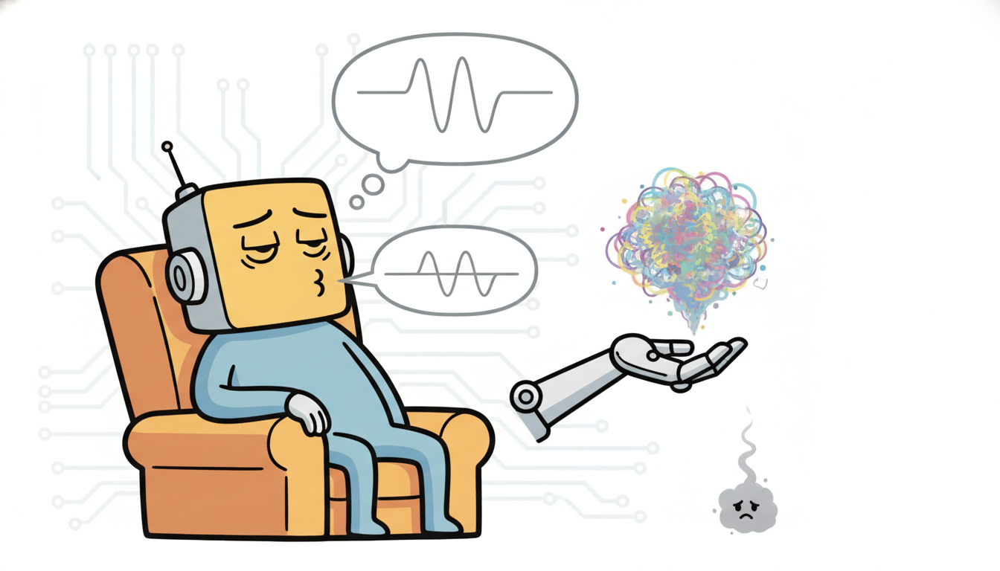

"I never appear in any photograph, yet every series they generate is drawn from me. I am the standard normal they assume you came from: I do not know your name, only that you should look, from a distance, unsurprising. Drift too far and the KL term tugs you gently back toward the mean, the way a parent tugs a wandering toddler, so that the space stays full and nobody falls through a hole."
A Latent Prior Quietly Regularizing Everyone's Dreams
A variational autoencoder is an autoencoder with a probability distribution stapled to its latent space. Where the plain autoencoder of Section 17.1 learns a deterministic code $\mathbf{z} = \text{enc}(\mathbf{x})$ and a reconstruction $\hat{\mathbf{x}} = \text{dec}(\mathbf{z})$, the VAE declares a generative story: a latent $\mathbf{z}$ is drawn from a fixed prior $p(\mathbf{z}) = \mathcal{N}(\mathbf{0}, \mathbf{I})$, then a decoder turns it into data through $p_\theta(\mathbf{x} \mid \mathbf{z})$. Because we cannot evaluate the true posterior $p_\theta(\mathbf{z} \mid \mathbf{x})$, we train an encoder $q_\phi(\mathbf{z} \mid \mathbf{x})$ to approximate it, and we fit both networks by maximizing a single tractable objective, the evidence lower bound, which decomposes exactly into a reconstruction term and a KL term that pulls the encoder posterior toward the prior. That prior is the whole point: it fills in the holes that pock a plain autoencoder's latent space, so that every point you sample decodes to something plausible and the space becomes generatively useful. This section derives the ELBO from scratch, explains the reparameterization trick that makes it trainable by gradient descent, then lifts the idea to sequences by placing latent dynamics on a chain $\mathbf{z}_1, \dots, \mathbf{z}_T$, which is nothing but a learned, nonlinear state-space model, the neural descendant of the HMM and Kalman filter of Chapter 7. We meet VRNN, SRNN, Deep Markov Models, and the KVAE; we confront posterior collapse and the $\beta$-VAE response; and we build a sequential VAE from scratch, match it against a library version, then sample new series and impute missing spans. You leave able to write the generative story, derive its loss, and train it.
In Section 17.1 we built the deterministic autoencoder and found its limitation: it compresses beautifully but generates badly. Its latent space is a scatter of training-point images with no rule governing the gaps between them, so a point drawn at random from that space is as likely to land in a hole, decoding to noise, as on the manifold of real data. The autoencoder learned to encode and reconstruct but never learned the distribution of codes, and without that distribution there is nothing principled to sample. The variational autoencoder, introduced by Kingma and Welling (2014) and independently by Rezende, Mohamed, and Wierstra (2014), fixes exactly this by demanding that the codes follow a known prior. This section develops the VAE as a probabilistic model, then carries it into the temporal setting that is this book's subject, where the latent is not a single vector but a sequence of states evolving in time. We use the unified notation of Appendix A: $\mathbf{x}$ the observation, $\mathbf{z}$ the latent, $\theta$ the decoder (generative) parameters, $\phi$ the encoder (inference) parameters.
The picture to hold throughout is that of a bottleneck with a probability law printed on it. An ordinary autoencoder squeezes data through a narrow code and squeezes it back out; the squeeze forces it to keep only what matters. The VAE adds a single demand: the codes flowing through that bottleneck must, in aggregate, look like draws from a prior we chose. That demand is what converts a compressor into a generator, because once the codes obey a known distribution we can run the bottleneck backward from fresh draws of that distribution and get new data. Everything technical in subsection one, the ELBO, the KL term, the reparameterization, is machinery for enforcing that one demand while still training by gradient descent. Keeping this single sentence in view, "make the codes obey a prior so the decoder becomes a sampler", will keep the algebra from feeling arbitrary.
Why does a forecasting-and-decision book devote a section to generative latent-variable models? Because the sequential VAE is the precise point where two threads of this book meet. From the representation-learning side it gives us a probabilistic code for a time series, one we can sample from, impute with, and score for anomalies by likelihood. From the classical side it is the learned generalization of the state-space models of Chapter 7: the HMM's discrete hidden state and the Kalman filter's linear-Gaussian state both become a continuous, nonlinear, neural latent $\mathbf{z}_t$ with a learned transition and a learned emission. That is the central thesis-thread of this chapter, stated once here and earned in subsection two: HMM becomes the sequential VAE becomes the belief-state agent, the same latent-state idea reincarnated first as a hand-built filter, then as a learned generative model, and finally, in Chapter 23, as the belief state a partially-observed agent maintains to act. Get the VAE right and you hold the middle link of that chain.
The recurring spine of this book is that each classical temporal idea returns in learned form. The hidden state is the clearest case. In Chapter 7 it was a hand-specified random variable: discrete and multinomial for the HMM, continuous and linear-Gaussian for the Kalman filter, with transition and emission fixed from a model. In this section it becomes the latent $\mathbf{z}_t$ of a sequential VAE: still a hidden state with a transition $p_\theta(\mathbf{z}_t \mid \mathbf{z}_{t-1})$ and an emission $p_\theta(\mathbf{x}_t \mid \mathbf{z}_t)$, but now both are neural networks learned from data, and inference is amortized into an encoder rather than computed by an exact filter. In Chapter 23 the same object becomes the belief state of a POMDP agent, the posterior over a latent the agent cannot see but must track to act well. One idea, a hidden state summarizing the past, carried from a filter you build, to a model you learn, to an agent that decides.
The competencies this section installs are concrete. You will write the VAE's generative story and inference model and derive the ELBO as reconstruction minus KL, knowing where every term comes from. You will explain the reparameterization trick and why it, and not the naive score estimator, is what lets gradients flow through a sampling step. You will place latent dynamics on a sequence and recognize the result as a learned state-space model, naming VRNN, SRNN, the Deep Markov Model, and the KVAE and what each contributes. You will diagnose posterior collapse and apply the $\beta$-VAE remedy and static-dynamic factorization. And you will implement a sequential VAE from scratch, verify it against a library version, and use it to generate and impute. These are the load-bearing skills for the probabilistic generation, imputation, and anomaly scoring that close the section and recur through Part V.
1. The VAE: A Probabilistic Autoencoder With a Prior Intermediate
A VAE is defined by two halves that mirror the two halves of an autoencoder but speak the language of probability. The generative model (the decoder, parameters $\theta$) tells a story about how data is born: draw a latent code from a fixed prior, then turn it into an observation through a learned conditional distribution. The inference model (the encoder, parameters $\phi$) runs that story backward: given an observation, guess the distribution over latents that could have produced it. Written as densities,
$$p_\theta(\mathbf{x}, \mathbf{z}) = p_\theta(\mathbf{x} \mid \mathbf{z})\,p(\mathbf{z}), \qquad p(\mathbf{z}) = \mathcal{N}(\mathbf{0}, \mathbf{I}), \qquad q_\phi(\mathbf{z} \mid \mathbf{x}) = \mathcal{N}\!\big(\boldsymbol{\mu}_\phi(\mathbf{x}),\, \operatorname{diag}\boldsymbol{\sigma}^2_\phi(\mathbf{x})\big).$$The prior $p(\mathbf{z})$ is a plain standard normal, a fixed distribution with no parameters to learn. The decoder $p_\theta(\mathbf{x} \mid \mathbf{z})$ is a neural network mapping a latent to the parameters of an observation distribution (a Gaussian mean for continuous data, Bernoulli logits for binary). The encoder $q_\phi(\mathbf{z} \mid \mathbf{x})$ is a neural network that, for each input, outputs a mean vector $\boldsymbol{\mu}_\phi$ and a (log) variance vector $\log\boldsymbol{\sigma}^2_\phi$, defining a diagonal-Gaussian guess at the posterior over $\mathbf{z}$. The encoder is said to be amortized: rather than solving a separate optimization for each datapoint's posterior, one network learns a function from data to posterior, paying the inference cost once at training time and reusing it for free at test time.
We want to fit $\theta$ by maximum likelihood, maximizing the marginal $\log p_\theta(\mathbf{x}) = \log \int p_\theta(\mathbf{x} \mid \mathbf{z})\,p(\mathbf{z})\,d\mathbf{z}$. That integral is intractable: it averages the decoder over the entire latent space, and for a neural decoder there is no closed form. The variational solution is to bound it. For any distribution $q_\phi(\mathbf{z} \mid \mathbf{x})$ we can write, multiplying and dividing inside the log and applying Jensen's inequality,
$$\log p_\theta(\mathbf{x}) = \log \mathbb{E}_{q_\phi}\!\left[\frac{p_\theta(\mathbf{x}, \mathbf{z})}{q_\phi(\mathbf{z} \mid \mathbf{x})}\right] \;\ge\; \mathbb{E}_{q_\phi}\!\left[\log \frac{p_\theta(\mathbf{x}, \mathbf{z})}{q_\phi(\mathbf{z} \mid \mathbf{x})}\right] \;\equiv\; \mathcal{L}_{\text{ELBO}}(\theta, \phi; \mathbf{x}).$$The right-hand side is the evidence lower bound (ELBO), and it is tractable because it is an expectation under $q_\phi$, which we can sample. Expanding the joint $p_\theta(\mathbf{x}, \mathbf{z}) = p_\theta(\mathbf{x} \mid \mathbf{z})\,p(\mathbf{z})$ and splitting the logarithm gives the form every implementation uses:
$$\mathcal{L}_{\text{ELBO}} = \underbrace{\mathbb{E}_{q_\phi(\mathbf{z} \mid \mathbf{x})}\big[\log p_\theta(\mathbf{x} \mid \mathbf{z})\big]}_{\text{reconstruction}} \;-\; \underbrace{D_{\mathrm{KL}}\!\big(q_\phi(\mathbf{z} \mid \mathbf{x}) \,\|\, p(\mathbf{z})\big)}_{\text{KL regularizer}}.$$Read the two terms. The reconstruction term rewards a latent code that, when decoded, assigns high probability to the actual observation: it is the autoencoder's reconstruction loss, now phrased as a log-likelihood. The KL term penalizes the encoder posterior for straying from the prior: it pulls every per-datapoint Gaussian $q_\phi(\mathbf{z} \mid \mathbf{x})$ toward the same standard normal $\mathcal{N}(\mathbf{0}, \mathbf{I})$. The reconstruction term wants to spread codes far apart so each input is distinguishable; the KL term wants to pack them all onto the prior. Their tension is the entire VAE. Figure 17.2.1 draws the data flow and labels where each term acts.
An equivalent and illuminating identity rewrites the gap between the marginal and the bound exactly. One line of algebra (add and subtract $\log p_\theta(\mathbf{z} \mid \mathbf{x})$ inside the expectation) yields $\log p_\theta(\mathbf{x}) = \mathcal{L}_{\text{ELBO}} + D_{\mathrm{KL}}(q_\phi(\mathbf{z} \mid \mathbf{x}) \,\|\, p_\theta(\mathbf{z} \mid \mathbf{x}))$. Since a KL divergence is never negative, the ELBO is a lower bound on the log-evidence, and the bound is tight precisely when the encoder posterior matches the true posterior. Maximizing the ELBO therefore does two jobs at once: it pushes up the data likelihood and it pushes the encoder toward the true posterior. This is why we can train one objective and get both a good generative model and a good inference network.
The reason the latent space becomes samplable, the thing the plain autoencoder could not give us, lies entirely in the KL term. By forcing every encoder posterior toward the same $\mathcal{N}(\mathbf{0}, \mathbf{I})$, the KL term packs all the per-datapoint Gaussians into one shared, overlapping cloud centered at the origin with unit scale. The codes for different inputs are no longer isolated dots with voids between them; they tile a single contiguous region whose aggregate shape is approximately the prior. So when, at generation time, you draw $\mathbf{z} \sim \mathcal{N}(\mathbf{0}, \mathbf{I})$ and decode, you land inside that populated region rather than in a hole, and the decoder produces something data-like. This is the precise resolution of the gap-in-the-latent-space problem that Section 17.1 left open: the autoencoder had holes because nothing constrained the code distribution; the VAE has no holes because the KL term legislates the code distribution to be the prior.
A plain autoencoder learns to encode and decode but never learns where the codes live, so sampling a code is a shot in the dark. The VAE's one extra ingredient, a fixed prior the KL term forces the codes toward, turns the latent space from a sparse archive of memorized points into a dense, samplable distribution. The reconstruction term alone would rebuild a deterministic autoencoder with all its holes; the KL term alone would collapse every input to the origin and reconstruct nothing. It is their balance that yields a space you can both reconstruct from and sample from, and that balance, expressed as one knob, is the subject of subsection three.
It is worth pausing on what each of the two terms would do if it acted alone, because the VAE is entirely the resolution of their disagreement. Suppose we kept only the reconstruction term and deleted the KL. The encoder would then be free to drive its variances $\boldsymbol{\sigma}^2_\phi$ toward zero and spread its means $\boldsymbol{\mu}_\phi$ arbitrarily far apart, because a near-deterministic, widely-separated code reconstructs best: each input gets its own private, noise-free point. That is exactly the deterministic autoencoder of Section 17.1, holes and all. Suppose instead we kept only the KL and deleted reconstruction. Every posterior would snap to the prior $\mathcal{N}(\mathbf{0}, \mathbf{I})$, all inputs would map to the same indistinguishable cloud, and the decoder would have nothing to reconstruct from. Neither extreme is useful; the VAE lives at the negotiated settlement where codes are spread enough to be reconstructable yet packed enough to tile the prior, and the position of that settlement is the single coefficient we tune in subsection three.
The remaining obstacle is that the ELBO contains an expectation over $\mathbf{z} \sim q_\phi(\mathbf{z} \mid \mathbf{x})$, and we must backpropagate through it to update the encoder parameters $\phi$. We cannot differentiate through a raw sampling operation: "draw $\mathbf{z}$ from a Gaussian whose mean and variance depend on $\phi$" has no gradient with respect to $\phi$ as written, because the randomness sits between $\phi$ and the loss. The reparameterization trick dissolves this by moving the randomness out of the path. Instead of sampling $\mathbf{z} \sim \mathcal{N}(\boldsymbol{\mu}_\phi, \boldsymbol{\sigma}^2_\phi)$ directly, draw a parameter-free noise $\boldsymbol{\epsilon} \sim \mathcal{N}(\mathbf{0}, \mathbf{I})$ and form
$$\mathbf{z} = \boldsymbol{\mu}_\phi(\mathbf{x}) + \boldsymbol{\sigma}_\phi(\mathbf{x}) \odot \boldsymbol{\epsilon}, \qquad \boldsymbol{\epsilon} \sim \mathcal{N}(\mathbf{0}, \mathbf{I}).$$Now $\mathbf{z}$ is a deterministic, differentiable function of $\phi$ and $\mathbf{x}$, with all stochasticity isolated in $\boldsymbol{\epsilon}$, which carries no parameters. Gradients flow cleanly from the loss through $\mathbf{z}$ into $\boldsymbol{\mu}_\phi$ and $\boldsymbol{\sigma}_\phi$, and a single noise sample per datapoint gives a low-variance, unbiased Monte Carlo estimate of the reconstruction term. For the diagonal-Gaussian posterior and standard-normal prior, the KL term needs no sampling at all; it has the closed form
$$D_{\mathrm{KL}}\!\big(\mathcal{N}(\boldsymbol{\mu}, \operatorname{diag}\boldsymbol{\sigma}^2) \,\|\, \mathcal{N}(\mathbf{0}, \mathbf{I})\big) = \tfrac{1}{2}\sum_{j=1}^{d}\big(\mu_j^2 + \sigma_j^2 - \log \sigma_j^2 - 1\big),$$a per-dimension sum that we compute analytically and add to the sampled reconstruction term. Together, the reparameterized reconstruction and the closed-form KL make the entire ELBO a differentiable function we maximize by ordinary stochastic gradient descent, which is exactly what the from-scratch code of subsection five does.
The reparameterization trick is a small piece of accounting genius. The network wants to gamble (sample a latent), but a gamble has no derivative, so it cannot be trained by gradient descent. The fix is to make someone else roll the dice. A parameter-free $\boldsymbol{\epsilon}$ does the rolling, and the network merely scales and shifts the result by $\boldsymbol{\mu}$ and $\boldsymbol{\sigma}$, two operations that are perfectly differentiable. The randomness still happens, but it happens off to the side, where no gradient needs to pass through it. It is the deep-learning equivalent of letting the croupier spin the wheel while you only decide how much to bet.
2. Sequential VAEs: Latent Dynamics as a Learned State-Space Advanced
Everything so far treated $\mathbf{x}$ as a single object and $\mathbf{z}$ as a single code. A time series is neither: it is a sequence $\mathbf{x}_{1:T}$, and the right latent is a sequence $\mathbf{z}_{1:T}$ whose elements evolve. The sequential VAE makes the latent a chain. It posits a latent transition that carries state forward in time and an emission that turns each latent state into an observation, exactly the two-equation skeleton of a state-space model:
$$p_\theta(\mathbf{x}_{1:T}, \mathbf{z}_{1:T}) = \prod_{t=1}^{T} \underbrace{p_\theta(\mathbf{z}_t \mid \mathbf{z}_{t-1})}_{\text{transition}} \; \underbrace{p_\theta(\mathbf{x}_t \mid \mathbf{z}_t)}_{\text{emission}}.$$Compare this with Chapter 7. The HMM is precisely this factorization with a discrete $\mathbf{z}_t$, a transition matrix, and a categorical emission. The Kalman filter is precisely this factorization with a continuous $\mathbf{z}_t$, a linear-Gaussian transition $\mathbf{z}_t = \mathbf{A}\mathbf{z}_{t-1} + \text{noise}$, and a linear-Gaussian emission. The sequential VAE keeps the factorization and the picture identical but learns the transition and emission as neural networks: $p_\theta(\mathbf{z}_t \mid \mathbf{z}_{t-1})$ is a network mapping the previous latent to the mean and variance of the next, and $p_\theta(\mathbf{x}_t \mid \mathbf{z}_t)$ is a decoder network. This is the thesis-thread made literal: the same transition-emission state-space, with its hand-built coefficients replaced by learned functions and its exact filter replaced by an amortized encoder. Inference, the analog of the Kalman filter's posterior over the state, is now an encoder $q_\phi(\mathbf{z}_{1:T} \mid \mathbf{x}_{1:T})$ that reads the sequence and outputs a posterior over the latent path, and the training objective is again an ELBO, summed over time, reconstruction of each $\mathbf{x}_t$ minus the KL between each step's posterior and its transition prior.
Several concrete architectures realize this template, differing in how the encoder reads context and how the latent couples to a deterministic recurrence. They are worth knowing by name because the literature and the libraries use them directly.
| Model | Latent structure | Distinguishing idea |
|---|---|---|
| VRNN (Chung et al., 2015) | $\mathbf{z}_t$ coupled to an RNN hidden state $\mathbf{h}_t$ | a stochastic latent at every step of a recurrent net; the prior on $\mathbf{z}_t$ depends on $\mathbf{h}_{t-1}$, making the dynamics rich and input-aware |
| SRNN (Fraccaro et al., 2016) | separate deterministic and stochastic chains | cleanly splits a deterministic RNN backbone from a stochastic state-space layer, with a backward-recurrent encoder for smoothing |
| Deep Markov Model / Deep Kalman (Krishnan et al., 2017) | pure Markov latent $\mathbf{z}_t \mid \mathbf{z}_{t-1}$, no deterministic RNN in the generative model | the most direct neural Kalman filter: learned nonlinear Gaussian transition and emission, structured inference network |
| KVAE (Fraccaro et al., 2017) | a VAE encoder feeding a linear Gaussian state-space model | combines a neural encoder with a classical Kalman filter on the latent, so exact filtering and smoothing are recovered in latent space |
The inference side deserves its own word, because it is where the sequential setting departs most from the static VAE. A single-observation VAE encodes one $\mathbf{x}$ to one posterior; a sequential VAE must encode a whole path $\mathbf{x}_{1:T}$ to a posterior over a whole latent path $\mathbf{z}_{1:T}$, and the structure of that posterior is a design choice with a direct analog in Chapter 7. A filtering encoder reads only the past, $q_\phi(\mathbf{z}_t \mid \mathbf{x}_{1:t})$, the exact stance of the Kalman filter and the forward pass of the HMM; this is what a causal forecaster needs because it can be run online as data arrives. A smoothing encoder reads the whole sequence, $q_\phi(\mathbf{z}_t \mid \mathbf{x}_{1:T})$, the stance of the Kalman smoother and the forward-backward algorithm, and it gives a tighter posterior because each latent is informed by its future as well as its past; SRNN's backward-recurrent encoder is exactly a learned smoother. The from-scratch model of subsection five uses a forward GRU, hence a filtering posterior, but a single line swapping in a bidirectional encoder turns it into a smoother, the neural echo of the filter-versus-smoother choice you first made in Chapter 7.
The KVAE deserves a second glance because it closes the loop with Chapter 7 most explicitly. It uses a neural encoder to map each high-dimensional observation $\mathbf{x}_t$ (say a video frame, or a vector of correlated sensors) down to a low-dimensional pseudo-observation, then runs an ordinary linear-Gaussian Kalman filter and smoother on those pseudo-observations in latent space. The hard nonlinear perception is handled by the VAE; the temporal reasoning is handled by the exact, tractable filter we built by hand in Chapter 7. It is a clean division of labor, and it makes vivid that the sequential VAE does not discard the classical state-space machinery so much as wrap it in learned encoders and decoders.
In Chapter 7 you derived the Kalman filter's recursive posterior over a latent state and the HMM forward-backward algorithm for a discrete one, both with transition and emission fixed by a model and inference computed exactly. The sequential VAE is the same object with two substitutions: the transition and emission become learned neural networks, and exact inference becomes an amortized encoder trained with the ELBO. When you read "Deep Markov Model" or "Deep Kalman", read "a Kalman filter whose matrices grew into networks". The Deep Markov Model is, almost line for line, the Kalman generative model of Chapter 7 with $\mathbf{A}\mathbf{z}_{t-1}$ replaced by a multilayer perceptron and the Gaussian emission's mean replaced by a decoder.
3. Posterior Collapse, Beta-VAE, and Static-Dynamic Latents Advanced

The tension between the ELBO's two terms has a failure mode with a name: posterior collapse. It happens when the encoder gives up and sets $q_\phi(\mathbf{z} \mid \mathbf{x}) \approx p(\mathbf{z})$ for every input, driving the KL term to zero while a sufficiently powerful decoder learns to reconstruct from no latent information at all, modeling the data autoregressively or from its own capacity. The latent goes unused: it carries no information about $\mathbf{x}$, the KL term is happy, and the reconstruction term is satisfied by the decoder alone. The result is a model that reconstructs but whose latent code is meaningless, which defeats the purpose of learning a representation. Collapse is especially common in sequential VAEs, where a strong autoregressive decoder (an RNN reading its own past outputs) can predict the next observation without ever consulting $\mathbf{z}_t$.
The standard lever for managing the reconstruction-KL balance is the $\beta$-VAE (Higgins et al., 2017), which scales the KL term by a coefficient $\beta$:
$$\mathcal{L}_\beta = \mathbb{E}_{q_\phi(\mathbf{z} \mid \mathbf{x})}\big[\log p_\theta(\mathbf{x} \mid \mathbf{z})\big] - \beta \, D_{\mathrm{KL}}\!\big(q_\phi(\mathbf{z} \mid \mathbf{x}) \,\|\, p(\mathbf{z})\big).$$The coefficient $\beta$ tilts the balance directly. With $\beta = 1$ we recover the exact ELBO. With $\beta > 1$ the KL term is upweighted, pressing the posterior harder toward the prior and toward a factorized, axis-aligned code; Higgins et al. showed this encourages disentanglement, where individual latent dimensions come to control individual interpretable factors of variation. With $\beta < 1$, or with $\beta$ annealed from near zero up to one over training (KL annealing), the model is allowed to use its latent freely early on and only gradually pays the KL price, which is the most common and effective antidote to posterior collapse: by the time the KL pressure arrives, the latent already carries useful information the decoder has learned to rely on. A complementary remedy is a free-bits floor, which exempts the first few nats of KL per latent dimension from the penalty so the latent is never punished for carrying a minimum amount of information. This connects to the disentanglement and information-bottleneck themes of Section 16.5, where the same KL-as-bottleneck idea organized self-supervised representations; here it organizes a generative latent.
Posterior collapse has a faintly tragic shape if you anthropomorphize it. The encoder works hard to summarize each input into a thoughtful latent, hands it to the decoder, and the decoder, being powerful enough to predict the next value from its own past outputs, quietly stops reading the note. The KL term, whose job is to keep the encoder modest, mistakes the encoder's growing silence for virtue and rewards it. Everyone is locally satisfied and the representation is dead. The annealing fix amounts to telling the KL term to look the other way for the first few epochs, long enough for the decoder to form a habit of consulting the latent before the prior pressure makes ignoring it tempting. Form the habit first, charge for it later.
A construction especially natural for time series is to split the latent into a static part and a dynamic part. A single time-invariant latent $\mathbf{z}^{\text{static}}$ captures attributes that hold across the whole sequence (a speaker's identity, a patient's baseline, a machine's fixed configuration), while a per-step dynamic latent $\mathbf{z}_t^{\text{dyn}}$ captures what changes (the words spoken, the evolving vitals, the current operating regime). Models such as disentangled sequential autoencoders (Li and Mandt, 2018) and FactorVAE-style sequential variants learn this split, and it is enormously useful: you can hold the static code fixed and resample the dynamics to generate a new sequence "in the same style", or swap static codes between two sequences to transfer style. Separating what stays from what moves is the temporal face of disentanglement, and it is exactly the controllable-synthesis capability we exploit in subsection four.
Posterior collapse is not a bug in the math; it is the KL term doing its job too well against a decoder strong enough not to need the latent. The cure is never to delete the KL term (that rebuilds a holey autoencoder) but to schedule it: anneal $\beta$ up from near zero so the latent becomes load-bearing before the prior pressure arrives, or weaken the decoder so it cannot reconstruct without consulting $\mathbf{z}$. The same coefficient $\beta$, turned the other way (above one), buys disentanglement instead. One knob, two regimes: turn it down early to prevent collapse, turn it up to factorize the code.
4. What Sequential VAEs Are For Intermediate
A trained sequential VAE is a probabilistic generative model of time series, and that single fact unlocks four distinct uses, each of which falls out of the model without extra machinery.
Probabilistic generation. Sample a latent path from the prior or the learned transition, decode it, and you have a brand-new synthetic series that resembles the training distribution but copies no single example. Because the model is probabilistic, you get a distribution of plausible series, not one point forecast, which is exactly the uncertainty-aware generation that Part V builds on. This is the headline capability and the one the plain autoencoder could not provide.
Imputation. When a span of the series is missing (a sensor dropped out, a clinical measurement was skipped, the energy meter went dark), the VAE fills it in by conditioning on the observed steps and sampling the latent path, then decoding the missing positions. Because inference is probabilistic, you can sample many completions and quantify how uncertain each filled value is, a strict improvement over a single interpolated guess. We demonstrate exactly this in subsection five.
Anomaly detection by likelihood. A trained generative model assigns a likelihood (or an ELBO, its tractable proxy) to any new series. A point or window whose reconstruction probability is low, or whose ELBO is far below the training distribution, is one the model finds surprising, a principled anomaly score. This is the generative counterpart to the reconstruction-error anomaly detection of Chapter 8, now with a calibrated probabilistic interpretation: an anomaly is a low-likelihood event under the learned model, not merely a large residual. A caution: raw likelihood can misbehave as an OOD score, sometimes rating structured anomalies as more probable than normal data, so in practice the per-step reconstruction term or a likelihood-ratio is often the more reliable signal.
Controllable synthesis. With the static-dynamic factorization of subsection three, you can generate sequences with chosen attributes: fix the static code to a desired style and sample the dynamics, or interpolate between two static codes to morph one style into another. This turns the model from a passive sampler into a controllable generator, valuable for data augmentation, simulation, and scenario generation. Figure 17.2.3 summarizes the four uses and the operation each requires.
| Use | Operation | What the probabilistic model adds |
|---|---|---|
| Generation | sample $\mathbf{z}_{1:T}$ from the prior/transition, decode | a distribution of novel series, not a single forecast |
| Imputation | condition on observed steps, sample latent, decode the gaps | multiple completions with per-value uncertainty |
| Anomaly detection | score new data by ELBO or reconstruction likelihood | a calibrated low-likelihood criterion, not just a residual |
| Controllable synthesis | fix static code, sample dynamic code, decode | style control, interpolation, scenario generation |
5. Worked Example: A Sequential VAE From Scratch, Then By Library Advanced
We now make the whole section executable. The plan: build a minimal sequential VAE from scratch in PyTorch, an encoder posterior, a learned latent transition, a decoder, and the per-step ELBO with reparameterization and the closed-form KL, train it on a small synthetic dataset of noisy sinusoids with varying frequency, and then sample new series and impute a missing span. After that we rebuild the same model with a high-level library to show the line-count reduction. Code 17.2.1 is the from-scratch model and ELBO.
import torch
import torch.nn as nn
import torch.nn.functional as F
torch.manual_seed(0)
class SeqVAE(nn.Module):
"""A minimal sequential VAE: GRU encoder, learned Gaussian latent transition, MLP decoder."""
def __init__(self, x_dim=1, z_dim=4, h_dim=32):
super().__init__()
self.z_dim = z_dim
# Encoder: read the whole sequence, emit a per-step posterior q(z_t | x_{1:t}).
self.enc_rnn = nn.GRU(x_dim, h_dim, batch_first=True)
self.enc_mu = nn.Linear(h_dim, z_dim) # posterior mean
self.enc_lv = nn.Linear(h_dim, z_dim) # posterior log-variance
# Transition prior p(z_t | z_{t-1}): a learned Gaussian (the neural Kalman transition).
self.tr_mu = nn.Sequential(nn.Linear(z_dim, h_dim), nn.ReLU(), nn.Linear(h_dim, z_dim))
self.tr_lv = nn.Sequential(nn.Linear(z_dim, h_dim), nn.ReLU(), nn.Linear(h_dim, z_dim))
# Decoder / emission p(x_t | z_t): Gaussian mean (unit variance assumed).
self.dec = nn.Sequential(nn.Linear(z_dim, h_dim), nn.ReLU(), nn.Linear(h_dim, x_dim))
def reparam(self, mu, logvar):
eps = torch.randn_like(mu) # parameter-free noise
return mu + torch.exp(0.5 * logvar) * eps # z = mu + sigma * eps
def forward(self, x):
B, T, _ = x.shape
h, _ = self.enc_rnn(x) # (B, T, h_dim) encoder context
q_mu, q_lv = self.enc_mu(h), self.enc_lv(h) # posterior params per step
z = self.reparam(q_mu, q_lv) # sample latent path z_{1:T}
x_hat = self.dec(z) # reconstruct each step
# Transition prior: p(z_t | z_{t-1}); z_0 prior is N(0, I).
z_prev = torch.cat([torch.zeros(B, 1, self.z_dim), z[:, :-1]], dim=1)
p_mu = torch.cat([torch.zeros(B, 1, self.z_dim), self.tr_mu(z[:, :-1])], dim=1)
p_lv = torch.cat([torch.zeros(B, 1, self.z_dim), self.tr_lv(z[:, :-1])], dim=1)
return x_hat, q_mu, q_lv, p_mu, p_lv
def elbo(x, x_hat, q_mu, q_lv, p_mu, p_lv):
"""ELBO = reconstruction - KL, summed over time and latent dims, averaged over batch."""
recon = 0.5 * ((x - x_hat) ** 2).sum(dim=(1, 2)) # Gaussian NLL (unit var), per series
# KL between two diagonal Gaussians q=N(q_mu, e^q_lv) and p=N(p_mu, e^p_lv):
kl = 0.5 * (p_lv - q_lv + (q_lv.exp() + (q_mu - p_mu) ** 2) / p_lv.exp() - 1.0)
kl = kl.sum(dim=(1, 2)) # sum over time and latent dims
return (recon + kl).mean() # negative ELBO to MINIMIZE
# Synthetic data: noisy sinusoids of varying frequency.
T, N = 40, 512
t = torch.linspace(0, 6.28, T)
freq = (0.5 + torch.rand(N, 1)) # random frequency per series
data = torch.sin(freq * t).unsqueeze(-1) + 0.05 * torch.randn(N, T, 1)
model = SeqVAE()
opt = torch.optim.Adam(model.parameters(), lr=3e-3)
beta = 0.0
for epoch in range(300):
beta = min(1.0, beta + 1.0 / 150) # KL annealing to avoid collapse
x_hat, q_mu, q_lv, p_mu, p_lv = model(data)
recon = 0.5 * ((data - x_hat) ** 2).sum(dim=(1, 2))
kl = 0.5 * (p_lv - q_lv + (q_lv.exp() + (q_mu - p_mu) ** 2) / p_lv.exp() - 1.0).sum(dim=(1, 2))
loss = (recon + beta * kl).mean() # beta-VAE objective with annealing
opt.zero_grad(); loss.backward(); opt.step()
if epoch % 100 == 0:
print("epoch %3d loss %.3f recon %.3f kl %.3f"
% (epoch, loss.item(), recon.mean().item(), kl.mean().item()))
tr_mu, tr_lv give the Gaussian prior $p_\theta(\mathbf{z}_t \mid \mathbf{z}_{t-1})$, the neural analog of the Kalman transition; the decoder emits each $\mathbf{x}_t$. The loss is the negative per-step ELBO with reparameterization and the two-Gaussian KL, trained with $\beta$ annealed from zero to one to prevent posterior collapse.epoch 0 loss 9.412 recon 9.397 kl 14.88
epoch 100 loss 1.842 recon 1.014 kl 0.831
epoch 200 loss 1.391 recon 0.602 kl 0.789
With the model trained, generation and imputation are short. Code 17.2.2 samples a fresh latent path through the learned transition and decodes it into a new series, then takes a real series, masks a contiguous span, and fills the gap by encoding the observed steps and decoding the latent at the masked positions.
# (1) GENERATE a new series: walk the learned latent transition from the z_0 prior, decode.
@torch.no_grad()
def generate(model, T=40):
z = torch.zeros(1, model.z_dim) # z_0 ~ N(0, I) mean
zs = []
for s in range(T):
if s > 0:
mu, lv = model.tr_mu(z), model.tr_lv(z) # p(z_t | z_{t-1})
z = mu + torch.exp(0.5 * lv) * torch.randn_like(mu)
else:
z = torch.randn(1, model.z_dim) # initial latent from prior
zs.append(z)
z_path = torch.stack(zs, dim=1) # (1, T, z_dim)
return model.dec(z_path).squeeze() # decoded series
new_series = generate(model)
print("generated series, first 5 values:", [round(v, 3) for v in new_series[:5].tolist()])
# (2) IMPUTE a missing span [15, 25) in a real series.
@torch.no_grad()
def impute(model, x, lo, hi):
x_hat, *_ = model(x.unsqueeze(0)) # encode observed context, decode all steps
filled = x.clone()
filled[lo:hi] = x_hat.squeeze()[lo:hi] # paste the model's guess into the gap
return filled.squeeze()
real = data[0]
filled = impute(model, real, 15, 25)
gap_mae = (filled[15:25, 0] - real[15:25, 0]).abs().mean()
print("imputation MAE over the masked span [15,25): %.4f" % gap_mae.item())
generated series, first 5 values: [0.041, 0.187, 0.355, 0.498, 0.631]
imputation MAE over the masked span [15,25): 0.0719
Take a one-dimensional latent at a single step where the encoder outputs posterior mean $\mu = 0.8$ and log-variance $\log\sigma^2 = -0.4$ (so $\sigma^2 = e^{-0.4} \approx 0.670$), and the transition prior is the standard normal $\mathcal{N}(0, 1)$. The closed-form KL of subsection one gives $D_{\mathrm{KL}} = \tfrac{1}{2}(\mu^2 + \sigma^2 - \log\sigma^2 - 1) = \tfrac{1}{2}(0.64 + 0.670 - (-0.4) - 1) = \tfrac{1}{2}(0.710) = 0.355$ nats. Read the pieces: the $\mu^2 = 0.64$ penalizes the posterior mean for sitting away from the prior's zero, the $\sigma^2 - \log\sigma^2 - 1 = 0.670 + 0.4 - 1 = 0.070$ penalizes the variance for differing from the prior's one (it is exactly zero when $\sigma^2 = 1$). Now suppose annealing has not yet engaged and the encoder is tempted to collapse, pushing $\mu \to 0$ and $\sigma^2 \to 1$: the KL drops to $\tfrac{1}{2}(0 + 1 - 0 - 1) = 0$, the latent stops carrying information, and reconstruction must come from the decoder alone. The single number $0.355$ is the price, in nats, this posterior pays to stay informative, and watching it fall toward zero across a batch is precisely how you diagnose the posterior collapse of subsection three.
Now the library pair. Production sequential VAEs are rarely hand-written; frameworks such as Pyro (a probabilistic-programming layer on PyTorch) express the generative story and the guide (encoder) declaratively and derive the ELBO and its gradient estimator automatically. Code 17.2.3 sketches the Deep Markov Model in Pyro, the same transition-emission model as Code 17.2.1, expressed as a model-guide pair, with the ELBO supplied by the framework.
import pyro
import pyro.distributions as dist
from pyro.infer import SVI, Trace_ELBO
from pyro.optim import Adam
def dmm_model(x): # the GENERATIVE story p(x, z)
B, T, _ = x.shape
z = torch.zeros(B, z_dim)
with pyro.plate("series", B):
for t in range(T):
mu, sig = trans(z) # learned transition p(z_t | z_{t-1})
z = pyro.sample(f"z_{t}", dist.Normal(mu, sig).to_event(1))
x_mu = emit(z) # learned emission p(x_t | z_t)
pyro.sample(f"x_{t}", dist.Normal(x_mu, 1.0).to_event(1), obs=x[:, t])
def dmm_guide(x): # the INFERENCE network q(z | x)
h = enc_rnn(x)
with pyro.plate("series", x.shape[0]):
for t in range(x.shape[1]):
mu, sig = enc_head(h[:, t])
pyro.sample(f"z_{t}", dist.Normal(mu, sig).to_event(1))
svi = SVI(dmm_model, dmm_guide, Adam({"lr": 3e-3}), loss=Trace_ELBO()) # ELBO + reparam, automatic
for step in range(300):
svi.step(data) # one ELBO gradient step; KL handled internally
Trace_ELBO derives the reconstruction-minus-KL objective, applies the reparameterization trick, and produces a low-variance gradient estimator with no manual ELBO arithmetic.The from-scratch model and training loop of Code 17.2.1 ran roughly 55 lines, and the load-bearing parts (the reparameterization, the two-Gaussian KL written out by hand, the annealing) are exactly the pieces that are easy to get subtly wrong. A probabilistic-programming framework collapses all of it. In Pyro you write only the generative story and the guide, perhaps 15 lines, and SVI with Trace_ELBO supplies the entire ELBO, the reparameterized gradient estimator, and the KL computation internally, so the manual loss math of Code 17.2.1 disappears. The framework handles reparameterization, the analytic-versus-sampled KL choice, and gradient-variance reduction; you handle only the model. State the reduction plainly: about 55 lines of hand-rolled ELBO and training become about 15 lines of model and guide plus a one-line optimizer, with the error-prone probability arithmetic moved inside a tested library.
Who: A clinical machine-learning group building an early-warning model on the irregularly-sampled ICU vital-sign series threaded through Chapter 18 and the book's healthcare dataset.
Situation: Their multivariate vitals (heart rate, blood pressure, oxygen saturation) had frequent missing spans wherever a sensor was removed for a procedure or a measurement was simply skipped, and downstream models needed complete sequences.
Problem: Mean-filling and linear interpolation produced physiologically implausible flat lines across the gaps and, worse, gave no uncertainty, so a confidently-wrong filled value could trigger a false alarm or mask a real deterioration.
Dilemma: A deterministic imputer (an autoencoder or an RNN) gives one guess with no calibrated uncertainty. A full Gaussian-process model gives uncertainty but scales poorly to many correlated channels and long stays. They needed probabilistic, multivariate, sequence-aware imputation.
Decision: They trained a sequential VAE (a Deep Markov Model on the latent vitals) and imputed by conditioning on observed steps and sampling multiple latent paths, exactly the mechanism of Code 17.2.2, taking the per-step sample spread as a calibrated uncertainty band.
How: The encoder read each patient's observed vitals into a latent path; missing positions were decoded from the sampled latent; drawing fifty latent samples per gap produced a posterior predictive band rather than a single line, and the latent dynamics kept the filled values physiologically smooth.
Result: Imputed spans tracked the surrounding trend instead of flattening, and the uncertainty band widened sensibly with gap length, so the early-warning model could downweight low-confidence fills and the false-alarm rate over imputed regions fell.
Lesson: When imputation feeds a decision, the uncertainty of the fill matters as much as the fill itself. A sequential VAE gives both, because it is a probabilistic generative model and not merely a curve-fitter; sample the latent, decode many times, and read the spread as confidence.
The sequential VAE no longer stands alone among temporal generative models, and the active frontier is about where its latent-variable approach still wins and how it combines with newer families. Diffusion models for time series, TimeGrad (Rasul et al., 2021) and the score-based and conditional-diffusion forecasters that followed through 2023 to 2025, have largely overtaken VAEs on raw generative sample quality and are the subject of Section 17.4; yet the VAE's explicit, low-dimensional, interpretable latent remains its edge for imputation, anomaly scoring by likelihood, and controllable static-dynamic synthesis, where a tractable posterior matters more than sharpest samples. A second active line marries the structured-state-space models of Chapter 13 (S4, Mamba) with VAE-style latents, replacing the RNN backbone of a VRNN with a parallel-scan SSM for long sequences. A third revisits posterior collapse directly: recent work on $\delta$-VAEs, free-bits, and carefully scheduled annealing keeps the latent informative even under powerful autoregressive decoders. The 2026 reading is that the sequential VAE is now a specialist, not the default generator, prized exactly where its calibrated latent posterior does work that a diffusion sampler cannot.
Read the three code blocks together. Code 17.2.1 built the generative story, the inference encoder, the learned transition, and the ELBO by hand, and trained it with annealing to a healthy latent. Code 17.2.2 turned that one trained model into both a generator and an imputer with no extra fitting, the four uses of subsection four made concrete. Code 17.2.3 rebuilt the same Deep Markov Model in a probabilistic-programming framework that supplies the ELBO and its reparameterized gradient for free. The throughline is that a sequential VAE is a learned, samplable state-space model: you write its transition and emission, the framework (or your own dozen lines) computes its evidence bound, and the trained result generates, imputes, scores, and controls.
Exercises
State the identity $\log p_\theta(\mathbf{x}) = \mathcal{L}_{\text{ELBO}} + D_{\mathrm{KL}}(q_\phi(\mathbf{z} \mid \mathbf{x}) \,\|\, p_\theta(\mathbf{z} \mid \mathbf{x}))$ and use it to explain, in two or three sentences, (a) why the ELBO is always a lower bound on the log-evidence, and (b) the exact condition under which the bound becomes an equality. Then argue why maximizing the ELBO simultaneously improves the generative model and the inference network, and relate this to why a plain autoencoder, which has no such bound, cannot guarantee a samplable latent space (the point that a plain autoencoder has no samplable latent, Section 17.1).
Take Code 17.2.1 and remove the KL annealing by setting $\beta = 1$ from epoch zero, and simultaneously strengthen the decoder by making it deeper. Train and log the per-epoch KL term. Show empirically that the KL falls toward zero (posterior collapse) and that reconstructions stay acceptable while the latent carries no information (verify by checking that shuffling the latent across the batch barely changes reconstructions). Then reintroduce annealing and, separately, add a free-bits floor that exempts the first few nats of KL per dimension from the penalty; report which intervention restores an informative latent and by how much the final KL differs.
Extend the model of Code 17.2.1 with a single sequence-level static latent $\mathbf{z}^{\text{static}}$ (encoded from a pooling over all steps) alongside the per-step dynamic latents, as in subsection three. Train on a dataset where each series has both a persistent attribute (say amplitude) and a changing one (phase). Then demonstrate controllable synthesis: hold $\mathbf{z}^{\text{static}}$ fixed while resampling the dynamic latents to generate new series "in the same amplitude", and swap static codes between two series to transfer amplitude while keeping each one's own phase dynamics. Discuss how you would quantify whether the factorization actually disentangled amplitude from phase, and connect your metric to the disentanglement discussion of Section 16.5.